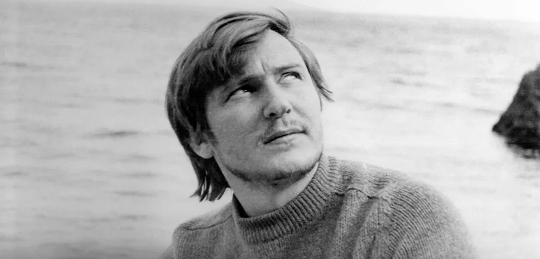

Володимир Івасюк

Український композитор і поет
Життєпис
1949
Володимир Івасюк народився 4 березня 1949 року в місті Кіцмань Чернівецької області в родині учителів Михайла Івасюка і Софії Карякіної. Мати родом із Запорізької області.1955
1955 року, коли Володимирові було 5 з половиною років, пішов учитися зі спеціальності скрипка до місцевої дитячої музичної школи, створеної зусиллями батька.1963
1963 закінчив Кіцманську музичну школу. Влітку вступив до Київської музичної десятирічки імені Миколи Лисенка[15] за спеціальністю альт. Навчався лише протягом першої чверті. З другої, через хворобу, повернувся до Кіцмані та навчався у середній та музичній школах за класом фортепіано.1964
1964 року написав музику до першої пісні «Колискова» на вірші батька. У рідній школі створив дівочий вокальний ансамбль «Буковинка».1966
Разом із сім'єю переїхав до Чернівців. Вступив до Чернівецького державного медичного інституту, але першого ж дня його відрахували за випадок з пам'ятником Леніна (у квітні того року, за два місяці до закінчення школи, Івасюк з однокласниками випадково скинули бюст Леніна у Кіцмані)1972
Переїхав до Львова. Там навчався в медичному інституті й розпочав студії у консерваторії на підготовчому відділенні.1974
У серпні 1974 року в складі радянської делегації взяв участь у міжнародному пісенному конкурсі «Сопот-74», де Софія Ротару виконала його пісню «Водограй»[25]. Із сестрою Галиною здійснив коротку подорож Польщею.1975
У серпні-вересні 1975 року в селі Розтоки на Буковині режисер Віктор Стороженко зняв фільм «Пісня завжди з нами», в якому Софія Ротару виконала 6 пісень В. Івасюка.1976
У липні 1976 року В. Івасюка відрахували з консерваторії за те, що під час зйомок цього фільму він пропускав заняття. Створив музику до вистави «Мезозойська історія» у Дрогобицькому обласному муздрамтеатрі.1978
У квітні 1978 року взяв участь у Всесоюзному конкурсі молодих композиторів у Єревані. Піаністка Л. Десяткіна виконала на конкурсі «Сюїту-варіації» на тему народної пісні «Сухая верба» В. Івасюка.1979
У квітні 1979 року був членом журі I Республіканського конкурсу артистів естради в Хмельницькому. Виїхав до Львова в ніч з 23 на 24 квітня.24 квітня 1979 року за телефонним викликом вийшов з дому і більше не повернувся. 18 травня тіло Володимира Івасюка випадково знайшли в Брюховицькому лісі під Львовом. Точна дата смерті невідома. 22 травня відбувся похорон Володимира Івасюка на Личаківському цвинтарі.